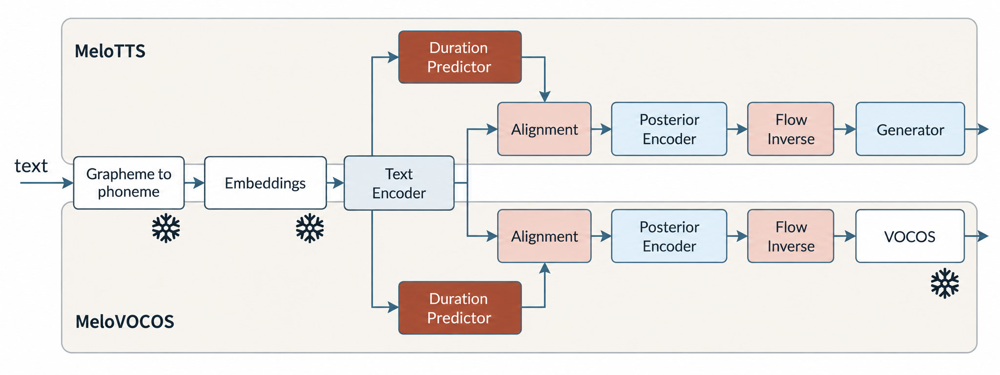

Waveform reconstruction, decoupled
MeloVOCOS is a neural text-to-speech architecture that replaces the waveform generator of MeloTTS with a frozen, pretrained VOCOS synthesizer. Instead of learning waveform reconstruction from scratch for every target speaker, the acoustic model is trained to predict representations compatible with the synthesizer’s log-mel input.
The proposed approach combines subband-weighted reconstruction of the predicted acoustic features with a post-synthesis mel loss, while retaining the linguistic and generative components of MeloTTS. Experiments show that the model reaches a comparable adaptation point in 300 epochs and 6.63 hours, compared with 1,260 epochs and 27.45 hours for the HiFi-GAN configuration.
01 / MAIN CONTRIBUTIONS
What this work adds
- A MeloTTS variant that delegates waveform reconstruction to a frozen pretrained VOCOS synthesizer.
- A VOCOS-compatible log-mel acoustic representation and reconstruction objectives before and after synthesis.
- An analysis of representations, projection layers, adversarial supervision and training efficiency for few-shot speaker adaptation.
02 / Key results
Fewer epochs.
A more efficient training path.
total optimization time
converged epochs
speaker samples
03 / The comparison
The gain is in convergence.
Per-epoch time stays close to 79 seconds. The improvement comes from reaching the selected checkpoint in fewer epochs.
HiFi-GAN27.45 h
VOCOS6.63 h
Wall-clock training time · Table 5
| Decoder | Time (h) | Epochs | s / epoch |
|---|---|---|---|
| HiFi-GAN | 27.45 | 1,260 | 78.4 |
| VOCOS | 6.63 | 300 | 79.6 |
Reported values from the supplied manuscript. These are training measurements, not inference-speed measurements.
WHAT THE ABLATIONS SHOW
The representation matters.
Direct log-mel prediction with reconstruction-based objectives gives the best overall performance in the paper’s analysis. Removing adversarial supervision degrades distributional quality; increasing hidden channels from 256 to 512 does not consistently improve the metrics.
View the evaluated configuration families
| Family | Representation | Projection | Generator losses | Discriminator |
|---|---|---|---|---|
| Baseline | Linear | None | All | All |
| Conv | Linear | Convolutional | All | All |
| Deep | Log-mel | Conv, Conv ×2, linear, FC | All | All |
| G | Log-mel | None | Mel, KL, Dur | All |
| A-Free | Log-mel | None | Mel, KL, Dur | None |
See Table 3 in the paper for all objective speech-quality measurements and individual variants.
07 / Listening examples
From representation
to voice.
Compare reference speech, MeloTTS and MeloVOCOS on the same utterance. Audio samples are not yet available for this companion page.
APending audio
Male speaker
LibriVox · English
- 01 · ReferenceNot yet available
- 02 · MeloTTSNot yet available
- 03 · MeloVOCOSNot yet available
BPending audio
Female speaker
LibriVox · English
- 01 · ReferenceNot yet available
- 02 · MeloTTSNot yet available
- 03 · MeloVOCOSNot yet available
03 / Method at a glance
Preserve. Adapt. Reconstruct.
MeloVOCOS keeps the text and acoustic modeling backbone of MeloTTS, but gives waveform reconstruction a new role: a frozen VOCOS synthesizer turns a learned log-mel representation into speech. The figure summarizes this compact change and the path from text to waveform.

Preserve the backbone
Retain text conditioning, duration prediction, alignment, posterior encoding and normalizing flows from MeloTTS.
Adapt the acoustics
Learn VOCOS-compatible log-mel representations, supervised by subband-weighted and post-synthesis reconstruction losses.
Freeze the synthesizer
Delegate waveform reconstruction to pretrained VOCOS. Keep adversarial feedback to regularize the predicted acoustic representation.
EXPERIMENTAL CONTEXT
Two speakers · 35K utterances / 31 h in the source dataset · 24 kHz audio · 10 adaptation utterances per speaker · 10% / 10% / 80% train, validation and test split.
06 / Citation
Reference this work.
Citation metadata includes the authors of this work. Publication details will be updated when available.
@inproceedings{melovocos2026,
title = {{MeloVOCOS}: Decoupling Waveform Reconstruction for a Neural {TTS}},
author = {Daza LLin, María Pilar and Blanco, Jose Luis and Hernandez Gomez, Luis},
booktitle = {Proceedings of IberSPEECH 2026},
year = {2026}
}04 / Representation space
From latent features to VOCOS-ready acoustics.
Figures 2 and 3 show the central change introduced by MeloVOCOS. The original MeloTTS latent representation is learned for HiFi-GAN and does not directly match the input expected by VOCOS. MeloVOCOS therefore learns a new acoustic representation in the log-mel domain, closer to the spectrogram that VOCOS uses to reconstruct speech.
This distinction is important: VOCOS is not a drop-in replacement for the original generator. The flow output must be adapted through the logarithmic transformation and, when needed, an output projection. The reconstruction losses supervise both the intermediate VOCOS input and the final synthesized signal, keeping the learned representation aligned with the frozen decoder.
Internal representations
The MeloTTS and MeloVOCOS latent spaces differ substantially before the flow. MeloVOCOS moves the representation toward the acoustic structure required by VOCOS.
Synthesizer input
The VOCOS input in MeloVOCOS follows the ground-truth log-mel structure more closely than the original HiFi-GAN input, although it remains a learned approximation.
05 / Experimental results
Robustness, quality and efficiency.
Before integrating VOCOS into the TTS pipeline, the paper evaluates how imperfect log-mel inputs affect synthesis, then compares the complete MeloTTS and MeloVOCOS configurations under matched conditions.
VOCOS robustness to perturbed inputs
Moderate additive noise is handled reasonably well, while smoothing that removes spectral structure causes a clearer degradation. This supports the need for log-mel features and reconstruction losses designed around the VOCOS input space.
| Condition | Speaker | Jitter ↓ | Shimmer ↓ | HNR ↑ | PESQ ↑ | VQ ↑ |
|---|---|---|---|---|---|---|
| GT | M | 3.1 | 1.4 | 1.0 | 4.3 | 4.6 |
| AWGN 20 dB | M | 1.4 | 7.3 | 7.3 | 3.5 | 3.9 |
| FS, N = 5 | M | 5.6 | 2.7 | 1.3 | 3.1 | 3.5 |
| TFS, N = 5 | M | 2.6 | 1.3 | 1.0 | 2.7 | 3.1 |
Configuration comparison
Direct log-mel prediction with reconstruction-based objectives gives the strongest overall results. Removing adversarial supervision degrades distributional quality, while increasing hidden channels from 256 to 512 does not consistently improve performance.
| Configuration | CER ↓ | STOI ↑ | UTMOS ↑ | ViSQOL ↑ | CosSim ↑ | FAD ↓ |
|---|---|---|---|---|---|---|
| Baseline | 1.0 | 0.4 | 1.0 | 1.0 | 0.0 | 66.1 |
| G-Mel | 0.9 | 0.3 | 1.0 | 1.3 | 0.2 | 38.0 |
| G-Dur | 0.8 | 0.3 | 2.2 | 1.2 | 0.1 | 33.8 |
| A-Free | 1.0 | 0.2 | 0.6 | 1.0 | 0.1 | 209.8 |
FIGURE 4STFT comparison
Place the supplied Figure 4 asset here to show the effect of wider temporal context in the LMel2 objective.
06 / Conclusions
A simpler route to speaker adaptation.
MeloVOCOS shows that waveform reconstruction can be partially delegated to a pretrained synthesizer while preserving the linguistic, duration, alignment, posterior-encoding and flow components of MeloTTS. The result is comparable intelligibility, speaker similarity and speech quality with substantially lower training cost.
Representations matter
Successful integration requires explicit adaptation to VOCOS-compatible log-mel features.
Losses guide the bridge
Reconstruction before and after synthesis aligns the learned acoustic space with the frozen decoder.
Efficiency comes from focus
The main gain comes from simpler optimization, not faster individual iterations.
07 / Demo check
Listen to the difference.
A dedicated space for all available reference, MeloTTS and MeloVOCOS samples. Add each audio file below with the same utterance and speaker so the comparison remains meaningful.
A
Speaker A
Reference · MeloTTS · MeloVOCOS
Audio samples will be added here.
B
Speaker B
Reference · MeloTTS · MeloVOCOS
Audio samples will be added here.
08 / Code
Reproducible research.
The MeloVOCOS repository is currently private and will be made public soon.